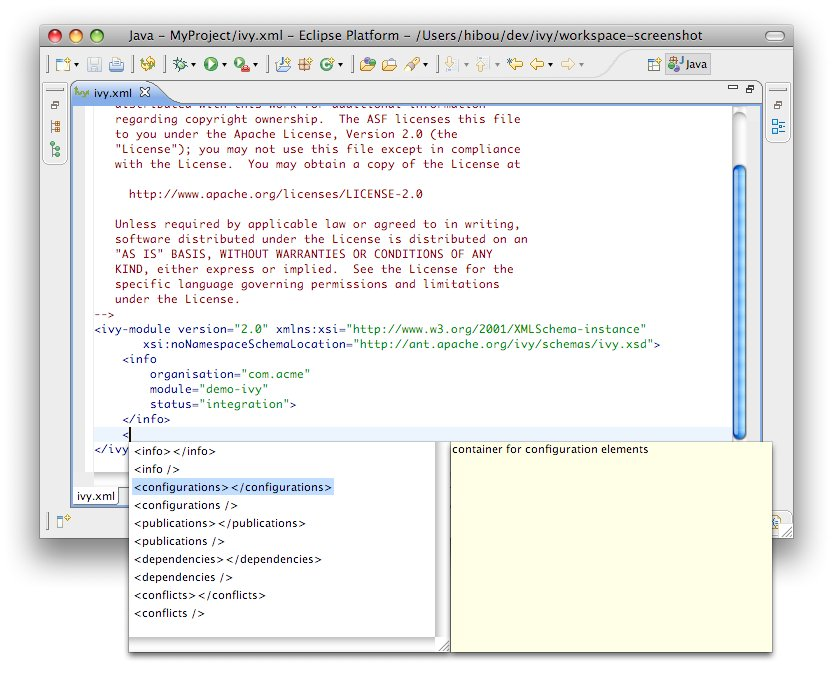

- Home
- Screenshots
- Download
- License
- Documentation (2.2.0.final)
- History
- Get Involved
- Foundation
Ivy file editor
Apache IvyDE comes with an Ivy file editor that provides an editor that performs code completion for Ivy xml tags based on the real-time state of your repository. It also packs with an Ivy file creation wizard and HTML preview.
Creation Wizard
To use the creation wizard, choose File > New > Other > IvyDE > Ivy file in the Eclipse menu (Ctrl+N by default). Select it and click Next.- Wizard fields:
- Container: you must select a target project. (This is already set if you access the wizard through the context menu on your project root folder).
- File name: the Ivy file name (ivy.xml by default).
- Organisation: the component owner name. (your company name or the company that provides the component if you are writing an ivy.xml file for 3rd party jars). Note that this value can be set in the Ivy preference page.
- Module name: the component name.
- Status: the status of the project. (integration by default since we have just created its ivy file. Please refer to the Ivy documentation for more details).
Ivy Editor
Completion comes with contextual help. The completion popup is displayed when through the CTRL + SPACE shortcut.
Available completions:
- XML structure: Allows you quickly to insert valid tags at the right place. If the tag can have nested children, both notations, simple tag and open tag, are proposed.
 - Tag attributes: When your cursor is placed in a tag bracket, the completion shows available attributes for the enclosing tag.

- Attributes values: When your cursor is placed inside the quotes of an attribute value, the completion shows available values for the matching attribute.
- Available value completion
- info: organisation (preference based), module (Eclipse project name),
- info/ivyauthor: name (preference based), url (pref based)
- info/description: homepage (pref based)
- info/license: name
- info/repository: name (the other attributes depend on it), url, ivys, pattern, artifacts
- configurations/conf: visibility, deprecated, extends
- publications/artifact: type, conf, ext
- dependencies/dependency: org, name, rev are resolved thanks to Ivy using the ivyconf set in the project Ivy preference page. If not set to "default" Ivy uses its defaults resolvers configuration (ie Ivyrep + ibiblio), and if these are not set Ivy uses the ivyconf set in the Eclipse Ivy preference page. conf values are computed from the current ivy.xml file and the dependency ivy.xml file if any.
Printer Friendly